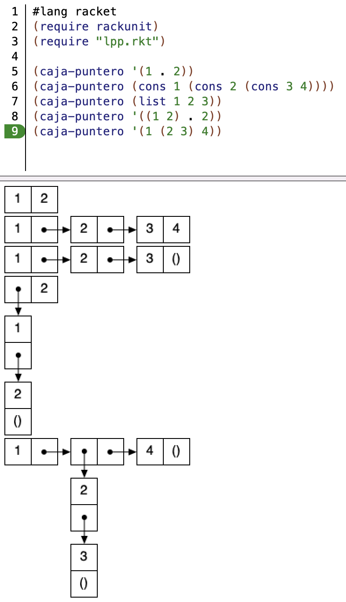
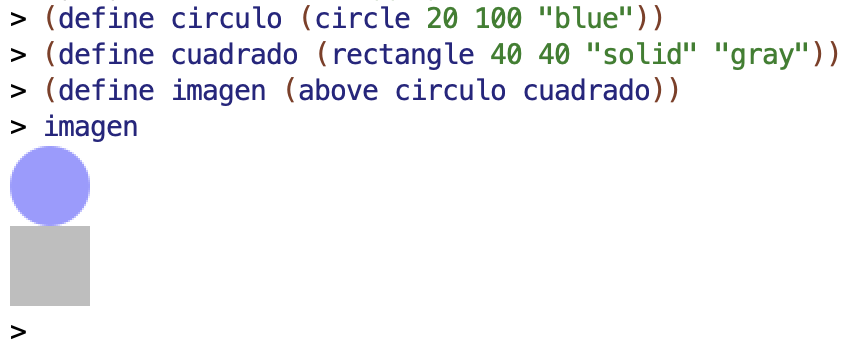
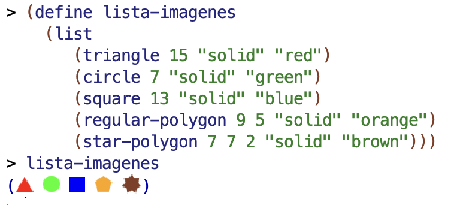
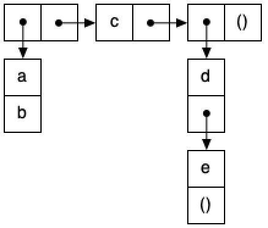
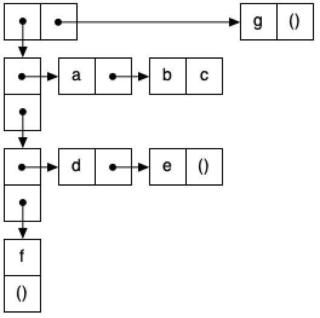

Práctica 3: Recursión, parejas y diagramas box-and-pointer¶
Antes de la clase de prácticas¶
-
Antes de empezar esta práctica es importante que revises la solución de la práctica 2. Puedes preguntar las dudas al profesor de prácticas.
-
Los siguientes ejercicios están basados en los conceptos de teoría vistos la semana pasada. Antes de la clase de prácticas debes repasar todos los conceptos y probar en el DrRacket todos los ejemplos de los siguientes apartados del tema 2 Programación Funcional:
- 2.7 Recursión
- 2.8 Recursión y listas
- 3 Tipos de datos compuestos en Scheme
- 4 Listas en Scheme
Ejercicios¶
Abre el DrRacket y crea el fichero practica3.rkt en el que deberás
escribir todos los ejemplos y soluciones de los ejercicios que
hagas.
Función auxiliar para dibujar diagramas caja y puntero¶
Descarga el fichero lpp.rkt,
pulsando el botón derecho del ratón y seleccionando la opción Guardar
como lpp.rkt. Guárdalo en la misma carpeta en la que tengas el
fichero practica3.rkt. Contiene la definición de una función
auxiliar (caja-puntero dato) que te permite crear diagramas caja y
puntero de estructuras de parejas.
El siguiente programa muestra un ejemplo del uso de esta función:
#lang racket
(require rackunit)
(require "lpp.rkt")
(caja-puntero '(1 . 2))
(caja-puntero (cons 1 (cons 2 (cons 3 4))))
(caja-puntero (list 1 2 3))
(caja-puntero '((1 2) . 2))
(caja-puntero '(1 (2 3) 4))
La siguiente imagen muestra la ejecución del programa en el DrRacket.

Puedes mirar el código fuente del fichero lpp.rkt para curiosear
cómo está implementada la función caja-puntero. Se utiliza la
librería de imágenes de
Racket 2htdp/image.
Para usar la librería hay que incluir la siguiente línea en nuestro programa:
#lang racket
(require 2htdp/image)
Una cosa muy interesante de esta librería es que define las imágenes como objetos de primera clase del lenguaje, que pueden asignarse a variables o pasarse como parámetro para construir otras imágenes. Lo podemos ver en el siguiente ejemplo:

Incluso podemos incluir imágenes en listas:

Ejercicio 1¶
a.1) Implementa la función recursiva (minimo lista) que recibe una lista
con números como argumento y devuelve el menor número de la
lista. Suponemos listas de 1 o más elementos.
Para la implementación debes usar la función menor definida en la
práctica anterior.
Pista
Podemos expresar el caso general de la recursión de la siguiente forma:
El mínimo de los elementos de una lista es el menor entre el primer elemento de la lista y el mínimo del resto de la lista.
Y el caso base:
El mínimo de una lista con un único número es ese número.
Ejemplos:
(minimo '(1 8 6 4 3)) ; ⇒ 1
(minimo '(1 -1 3 -6 4)) ; ⇒ -6
a.2) Vamos a investigar el funcionamiento de la recursión en la función
minimo. Supongamos la siguiente llamada:
(minimo '(1 8 6 4 3)) ; ⇒ 1
- ¿Qué lista se pasa como parámetro a la primera llamada recursiva a la función?
- ¿Qué devuelve esa llamada recursiva?
- ¿Con qué argumentos se llama a la función
menorque devuelve el resultado final?
b) Implementa la función recursiva (concatena lista-chars) que recibe
una lista de caracteres y devuelve la cadena resultante de
concatenarlos.
Ejemplos:
(concatena '(#\H #\o #\l #\a)) ; ⇒ "Hola"
(concatena '(#\S #\c #\h #\e #\m #\e #\space #\m #\o #\l #\a))
; ⇒ "Scheme mola"
c) Implementa la función (contiene? cadena char) que comprueba si
una cadena contiene un carácter determinado. Debes usar la función
string->list e implementar la función auxiliar recursiva
(contiene-lista? lista dato).
Ejemplos:
(contiene? "Hola" #\o) ; ⇒ #t
(contiene? "Esto es una frase" #\space) ; ⇒ #t
(contiene? "Hola" #\h) ; ⇒ #f
Ejercicio 2¶
a) Implementa la función recursiva (binario-a-decimal lista-bits) que reciba
una lista de bits que representan un número en binario (el primer
elemento será el bit más significativo) y devuelva el número decimal
equivalente.
Pista
Puedes utilizar la función length.
(binario-a-decimal '(1 1 1 1)) ; ⇒ 15
(binario-a-decimal '(1 1 0)) ; ⇒ 6
(binario-a-decimal '(1 0)) ; ⇒ 2
b) Implementa la función recursiva (ordenada-creciente? lista-nums)
que recibe como argumento una lista de números y devuelve #t si los
números de la lista están ordenados de forma creciente o #f en
caso contrario. Suponemos listas de 1 o más elementos.
(ordenada-creciente? '(-1 23 45 59 99)) ; ⇒ #t
(ordenada-creciente? '(12 50 -1 293 1000)) ; ⇒ #f
(ordenada-creciente? '(3)) ; ⇒ #t
Ejercicio 3¶
a.1) Dado el siguiente box & pointer, escribe la expresión en Scheme
que define p1 usando el mínimo número de llamadas a list y
cons. No debes utilizar expresiones con quote. Puedes usar la
función gráfica caja-puntero para comprobar si tu solución es correcta.

a.2) Escribe las expresiones que devuelven 2 y 4 a partir de
p1. Debes usar las funciones first y rest si el argumento es una
lista y car y cdr si es una pareja que no forma parte de una lista.
b.1) Dado el siguiente diagrama caja y puntero, escribe la expresión en
Scheme que define p2 usando el mínimo número de llamadas a list y cons.

b.2) Escribe las expresiones que devuelven 9 y 2 a partir de
p2. Debes usar las funciones first y rest si el argumento es una
lista y car y cdr si es una pareja que no forma parte de una
lista.
Ejercicio 4¶
Implementa la función recursiva (contar-datos-iguales lista-parejas)
que recibe una lista de parejas y devuelve el número de parejas que
tienen sus dos datos iguales.
(contar-datos-iguales '((2 . 3) ("hola" . "hola") (\#a . \#a) (true . false))) ; ⇒ 2
(contar-datos-iguales '((2 . "hola") ("hola" . 3) (\#a . true) (\#b . false))) ; ⇒ 0
Ejercicio 5¶
Vamos a jugar al dominó.
En el juego del dominó las fichas tienen una pareja de valores. Podemos colocar una ficha en la partida cuando uno de los valores de la ficha coincide con el primer valor de la lista de fichas ya colocadas o con el último.
Por ejemplo, supongamos que la partida ha formado la siguiente lista de fichas:
((1 . 3) (3 . 0) (0 . 0) (0 . 4) (4 . 2))
Esta es una lista correcta, porque coinciden los valores de las fichas que la forman (el valor derecho de una ficha con el izquierdo de la siguiente).
Si tuviéramos en nuestra mano de fichas las fichas:
((5 . 5) (3 . 2) (4 . 6) (6 . 6))
podríamos colocar la ficha (3 . 2) al final de la lista de la partida (girándola).
a) Implementa la función recursiva (domino-correcto? fichas) que
recibe una lista de fichas resultantes de una partida de dominó y
comprueba si las fichas están colocadas de forma correcta.
(define partida '((1 . 3) (3 . 0) (0 . 0) (0 . 4) (4 . 2)))
(domino-correcto? partida) ; ⇒ #t
(domino-correcto? '((1 . 3))) ; ⇒ #t
(domino-correcto? '((1 . 4) (2 . 1))) ; ⇒ #f
b) Implementa la función recursiva (juega? mano partida) que recibe
una mano (una lista de fichas) y otra lista de fichas colocadas en la
partida y devuelve #t si existe alguna ficha de la mano que se puede
colocar en la partida.
Para obtener la última ficha de la partida debes usar e implementar
la función (ultimo lista) que devuelva el último elemento de una
lista. Hazla también recursiva.
(define mano '((5 . 5) (3 . 2) (4 . 6) (6 . 6)))
(juega? mano partida) ; ⇒ #t - podría poner la ficha (3 . 2)
(juega? mano '((0 . 0))) ; ⇒ #f
(juega? mano '((0 . 0) (0 . 1))) ; ⇒ #f
Ejercicio 6¶
a) Implementa las funciones (suma-izq pareja n) y (suma-der pareja n)
definidas de la siguiente forma:
(suma-izq pareja n): devuelve una nueva pareja con la parte izquierda incrementada enn.(suma-der pareja n): devuelve una nueva pareja con la parte derecha incrementada enn.
Ejemplos:
(suma-izq (cons 10 20) 3) ; ⇒ (13 . 20)
(suma-der (cons 10 20) 5) ; ⇒ (10 . 25)
b) Implementa la función recursiva (suma-impares-pares lista-num)
que devuelva una pareja cuya parte izquierda sea la suma de los
números impares de la lista y la parte derecha la suma de los números
pares. Debes utilizar las funciones auxiliares definidas en el
apartado anterior. También puedes utilizar las funciones predefinidas
even? y odd?.
Ejemplos:
(suma-impares-pares '(3 2 1 4 8 7 6 5)) ; ⇒ (16 . 20)
(suma-impares-pares '(3 1 5)) ; ⇒ (9 . 0)
c) Recuerda la función recursiva (veces lista id) que vimos en
teoría:
(define (veces lista id)
(cond
((null? lista) 0)
((equal? (first lista) id) (+ 1 (veces (rest lista) id)))
(else (veces (rest lista) id))))
(veces '(a b a a b b) 'a) ; ⇒ 3
Reescribe la función (veces lista id) para que solo aparezca una
llamada recursiva en su código.
Ejercicio 7¶
Implementa la función recursiva (cadena-mayor lista) que recibe un
lista de cadenas y devuelve una pareja con la cadena de mayor longitud
y dicha longitud. En el caso de que haya más de una cadena con la
máxima longitud, se devolverá la última de ellas que aparezca en la
lista.
En el caso en que la lista sea vacía se devolverá la pareja con la cadena vacía y un 0 (la longitud de la cadena vacía).
Pista: puedes utilizar la función string-length
(cadena-mayor '("vamos" "a" "obtener" "la" "cadena" "mayor")) ; ⇒ ("obtener" . 7)
(cadena-mayor '("prueba" "con" "maximo" "igual")) ; ⇒ ("maximo" . 6)
(cadena-mayor '()) ; ⇒ ("" . 0)
Entrega de la práctica¶
Sube la solución de los ejercicios al cuestionario de Moodle Entrega práctica 3 hasta el domingo 20 de febrero a las 21:00 h.
Tal y como hemos comentado al comienzo de la práctica, debes incluir casos de prueba en todo el código que escribas.
Una vez finalizado el plazo de entrega podrás revisar el cuestionario y visualizar la solución. Corrige la entrega, comparando la solución con la tuya. Puedes consultar cualquier duda con tu profesor en la clase de prácticas de la semana que viene.
Lenguajes y Paradigmas de Programación, curso 2021-22
© Departamento Ciencia de la Computación e Inteligencia Artificial, Universidad de Alicante
Domingo Gallardo, Cristina Pomares, Antonio Botía, Francisco Martínez